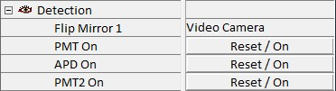

|
检测
|
检测参数组用于控制光子计数设备和倒置光路。
更多信息（操作指南）：

翻转反射镜 1
此参数控制倒置光路中的翻转反射镜（适用于2015年之前制造的系统）。可以在摄像机和检测之间切换。这在测量开始或停止时自动完成。
PMT/APD/PMT2 开启
按下此按钮可打开相应的光子计数设备。这在测量开始时自动完成。
如果计数率超过 4500 kHz，光子计数设备将自动关闭以进行保护。在这种情况下，在降低光强度后，可以使用此按钮打开（复位）光子计数设备。
避免将过高光强度暴露给光子计数设备是用户的责任。